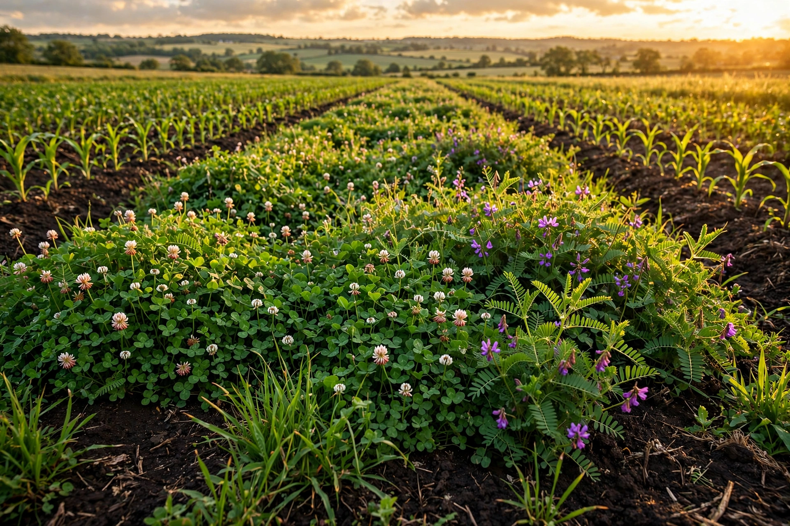

Regenerative agriculture
| Regenerative agriculture | |
|---|---|
| Focus | Soil health, biodiversity, ecosystem restoration |
| Key practices | Cover crops, no-till, rotational grazing, agroforestry, compost |
| Related | Permaculture, organic farming, agroecology |

Regenerative agriculture is a conservation and rehabilitation approach to food and farming systems. It focuses on topsoil regeneration, increasing biodiversity, improving the water cycle, enhancing ecosystem services, supporting biosequestration, increasing resilience to climate change, and strengthening the health and vitality of farm soil.
The term has been traced to the Rodale Institute and proponents such as Robert Rodale in the 1980s, and gained wider currency in the 2010s through farmers, ranchers and organisations advocating soil-centred land management. Regenerative agriculture is not a single specific practice but an outcomes-based framework drawing on techniques from organic agriculture, permaculture, agroecology, agroforestry, and holistic management.
History
Ideas of farming that rebuilds soil long predate the term: Indigenous land-management traditions, the writings of early organic pioneers such as Sir Albert Howard, and mid-20th-century soil conservation movements all emphasised soil organic matter. Robert Rodale popularised "regenerative" language in the 1980s; in the 2000s and 2010s figures such as Allan Savory (holistic planned grazing) and Gabe Brown (soil-health principles) helped spread the concept among ranchers and arable farmers. Large food companies began launching regenerative sourcing programmes in the late 2010s.
Practices
- Minimising soil disturbance — no-till or reduced-till farming
- Cover crops and keeping living roots in the ground year-round
- Crop diversity and rotation, including intercropping and agroforestry
- Managed rotational grazing of livestock integrated with cropping
- Reducing synthetic inputs, applying compost and biological amendments
- Maintaining soil armour — residue and mulch cover protecting the surface
Claimed benefits
Proponents claim regenerative practices can increase soil organic carbon, improve water infiltration and retention, reduce erosion, support pollinators and soil microbes, and make farms more resilient to drought. Some studies report yield stability with lower input costs; carbon sequestration potential is frequently cited in climate-mitigation discussions, though estimates of its scale vary widely.
Criticism and debate
There is no single legal definition or universal certification standard for "regenerative", leading to concerns about greenwashing and inconsistent claims. Scientists debate the magnitude and permanence of soil carbon gains, whether grazing-based systems can offset livestock methane emissions, and whether outcomes can be generalised across climates and soil types. Several certification schemes — including Regenerative Organic Certified — have been created to give the term verifiable criteria.